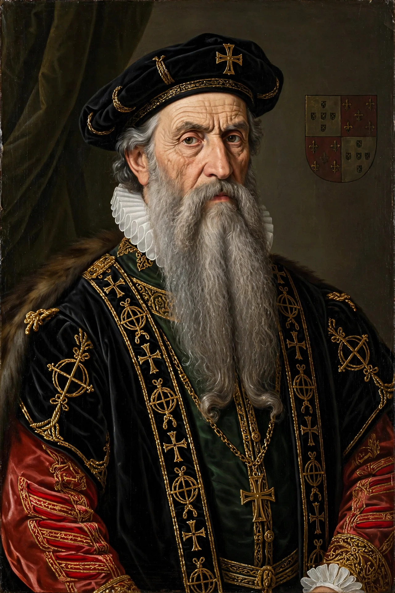

Afonso de Albuquerque
| Afonso de Albuquerque | |
|---|---|
| Born | c. 1453 Alhandra, Kingdom of Portugal |
| Died | 16 December 1515 (aged ~62) At sea, off Goa |
| Occupation | Admiral; Governor of Portuguese India (1509–1515) |
| Known for | Conquests of Goa, Malacca and Hormuz; founding of the Portuguese seaborne empire in Asia |

Afonso de Albuquerque, 1st Duke of Goa (c. 1453 – 16 December 1515) was a Portuguese general, admiral and statesman. As second governor of Portuguese India, he conquered Goa (1510), Malacca (1511) and Hormuz (1515), establishing the network of fortified bases that made Portugal the dominant naval power in the Indian Ocean. He is widely regarded as the principal architect of the Portuguese empire in Asia and was famed — and feared — for his brilliant but ruthless generalship, earning epithets such as "the Terrible", "the Great" and "the Lion of the Seas".
Early life and first voyages
Albuquerque was born near Lisbon, of noble descent, and educated at the court of Afonso V. He served in North Africa and in the war against Castile, and against the Ottomans at Otranto. In 1503 he sailed to India with his cousin Francisco de Albuquerque, helping establish the Portuguese factory-fort at Cochin. After returning to Portugal he persuaded King Manuel I of a strategy of seizing the chokepoints of Asian trade — Aden, Hormuz, Goa and Malacca — rather than relying on annual fleets alone.
Governor of India
Sent east again in 1506 with Tristão da Cunha, Albuquerque captured Socotra and, in 1507, Hormuz, though he soon lost it when his captains deserted. He became governor of India in 1509, succeeding Francisco de Almeida, after a brief imprisonment at Cannanore by Almeida, who refused at first to hand over power.
Conquests
In 1510 Albuquerque seized Goa from the Sultanate of Bijapur; after losing and retaking it, he made it the capital of Portuguese India, encouraging marriages between Portuguese men and local women and building the administrative structure of the Estado da Índia. In 1511 he conquered Malacca, commanded by Sultan Mahmud Shah, the richest entrepôt of Southeast Asia, building the fortress A Famosa. An unsuccessful attack on Aden in 1513 was followed in 1515 by the definitive capture of Hormuz, completing his design of controlling the entrances to the Arabian Sea and the Straits of Malacca.
Death and legacy
Albuquerque died at sea off Goa in December 1515, embittered by court intrigues that had secured his replacement by his enemy Lopo Soares de Albergaria. Shortly before his death the king recognised his services; he was later created Duke of Goa — the first Portuguese duke born outside the royal family. His letters and the Commentaries compiled by his son are major sources for the period. His system of fortresses, local alliances and intermarriage underpinned Portuguese power in Asia for a century.
See also
Portuguese India · Goa · Malacca Sultanate · Parameswara of Malacca · Vasco da Gama